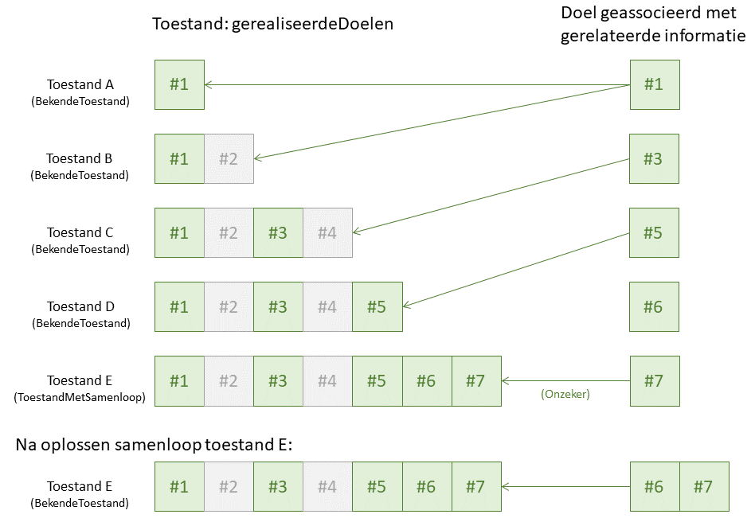
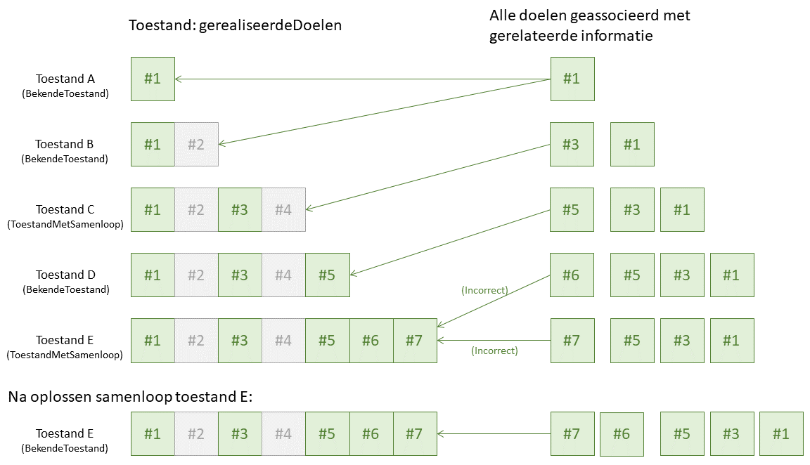

Scenario: samen met regelgeving
Proces
In dit scenario gebeurt het aanpassen van de regelgeving-gerelateerde informatie in samenhang met het opstellen van de regelgeving, volgens het geïntegreerd proces van bekendmaken en consolideren. Tijdens dit proces zullen voor zowel de regelgeving (regelingen, informatieobjecten) als de regelgeving-gerelateerde informatie steeds nieuwe versies ontstaan. Het bevoegd gezag is verantwoordelijk voor het borgen van de inhoudelijke samenhang, dus om ervoor te zorgen dat als een regeling, informatieobject of regelgeving-gerelateerde informatie wijzigt, de overige regelingen, informatieobjecten en/of gerelateerde informatie daarmee in lijn worden gebracht. Dit kan procesmatig of via software geregeld worden. STOP kent geen mechanisme om de inhoudelijke consistentie van regelingen, informatieobjecten en gerelateerde informatie te verifiëren.
In het proces wordt gewerkt aan nieuwe regelgeving voor één of meer doelen. Het proces resulteert per doel in een nieuwe versie van een of meer regelingen en/of informatieobjecten, in een nieuwe versie van gerelateerde informatie, en (via de besluiten) in geldigheidsinformatie zoals de inwerkingtredingsdatum. Zolang de gerelateerde informatie geassocieerd kan worden met één of meer regelingen of informatieobjecten (als work), dan kan het doel gebruikt worden om de toestanden van de regelingen/informatieobjecten te vinden die het gevolg zijn van de wijzigingen die voor hetzelfde doel zijn aangebracht in de regelgeving. Van die toestanden kan de geldigheidsinformatie overgenomen worden. Het is niet nodig om de regelgeving en de gerelateerde informatie op het niveau van versies te associëren (zoals in een ander scenario).
Principe van synchronisatie
De synchronisatie van regelgeving en gerelateerde informatie bestaat er in de kern uit:
Het bevoegd gezag werkt voor een specifiek doel aan nieuwe regelgeving en (in samenhang daarmee) aan gerelateerde informatie.
De gerelateerde informatie is te associëren met een specifieke regeling of informatieobject en is geldig als die versie van die regeling/informatieobject geldig is die voor hetzelfde doel is opgesteld.
De regelgeving wordt (via besluiten) bekendgemaakt en treedt in werking.
De geldigheid van de gerelateerde informatie wordt overgenomen van de geldigheid van de toestanden (geconsolideerde versies) van de geassocieerde regeling/informatieobject die met hetzelfde doel zijn geassocieerd. Hierbij worden wijzigingen in de regelgeving genegeerd die niet leiden tot een wijziging in de gerelateerde informatie.
Er wordt rekening mee gehouden dat (nog) niet bekend kan zijn hoe de geconsolideerde versie van een regeling/informatieobject precies luidt. Voor het oplossen van dergelijke consolidatieproblemen wordt meegelift op het regelgeving proces: als het bevoegd gezag aanvullende informatie aanlevert om de geconsolideerde versie van regelgeving te kunnen maken, dan wordt ook aanvullende gerelateerde informatie uitgewisseld.
Voor de regeling of het informatieobject is de informatie over de doelen beschikbaar in gerealiseerdeDoelen bij een toestand als onderdeel van de toestanden voor de regeling/informatieobject. Toestanden komen in twee varianten. Een BekendeToestand beschrijft een toestand waarvan duidelijk is hoe de regelgeving luidt. Dat is niet het geval bij een ToestandMetSamenloop: er is dan sprake van verschillende besluiten die geen rekening met elkaar houden en waarvoor onvoldoende informatie beschikbaar om eenduidig vast te stellen hoe de resulterende regelgeving luidt. Het bevoegd gezag heeft een wettelijke plicht die informatie alsnog aan te leveren waar het regelgeving betreft die nu of in de toekomst geldig wordt.
Het synchronisatiemechanisme wordt uitgelegd aan de hand van toestanden, maar werkt ook voor proefconsolidaties. Er zijn twee manieren waarop de synchronisatie ingevuld kan worden: synchronisatie op een enkel doel, of op alle gerealiseerde doelen.
Synchronisatie op een enkel doel
Als het voldoende is om de synchronisatie uit te voeren voor de bekende toestanden en te wachten op het oplossen van samenloop bij toestanden met samenloop, dan kan volstaan worden met synchronisatie op een enkel doel:
Elke versie van de gerelateerde informatie wordt geassocieerd met het doel waarvoor de versie is aangemaakt.
Na het beschikbaar komen van het overzicht van de toestanden van de regeling/informatieobject worden uit de gerealiseerdeDoelen de doelen weggelaten waarvoor geen versie van de gerelateerde informatie is opgesteld.
Een versie van de gerelateerde informatie komt overeen met alle toestanden waarvoor het geassocieerde doel als laatste in de gestripte gerealiseerdeDoelen voorkomt.
Als een toestand geen BekendeToestand is, dan is onzeker of de gerelateerde informatie correct is.

In het voorbeeld is toestand E bijvoorbeeld ontstaan doordat de regelgeving geassocieerd met twee doelen tegelijk in werking is getreden, terwijl bij het opstellen van de versie van de regelgeving voor elk doel geen rekening is gehouden met de andere versie. Voor beide doelen is een versie van de gerelateerde informatie beschikbaar, die mogelijk ook samenloop zal kennen. Op basis van het synchronisatierecept zou een van de versies gekozen kunnen worden als gerelateerde informatie bij de toestand, maar of dat correct is, is onzeker.
Het bevoegd gezag kan de samenloop oplossen door zowel aan te geven hoe de regelgeving moet komen te luiden als een nieuwe versie van de gerelateerde informatie aan te leveren. Het meest robuust is om in dit geval aan te geven dat de gerelateerde informatie is geassocieerd met het tegelijk in werking treden van beide doelen; de overeenkomende toestanden worden gevonden doordat beide doelen (in willekeurige volgorde) als laatste voorkomen in de gerealiseerdeDoelen. Als later door bijvoorbeeld een rechterlijke interventie het besluit wordt vernietigd met de regelgeving van een van de twee doelen, dan kan teruggevallen worden op de eerder uitgewisselde informatie over het andere doel.
Dit scenario wordt gedemonstreerd in een voorbeeld.
Synchronisatie op alle gerealiseerde doelen
Als meer controle nodig is over de correctheid van gerelateerde informatie in situaties waar voor de regeling/informatieobject samenloop optreedt, dan kan gekozen worden voor synchronisatie waarbij alle gerealiseerde doelen betrokken zijn:
Voor een versie van de gerelateerde informatie is bekend voor welke doelen de wijzigingen in die versie verwerkt zijn. Dat kan gedaan worden door elke versie te associëren met alle doelen. Maar ook door de versie alleen te associëren met het doel waarvoor de versie is gemaakt en te verwijzen naar een (eerdere) versie waarop deze versie gebaseerd is: door alle eerdere versies langs te lopen kan ook bepaald worden welke doelen geassocieerd zijn met die versie.
Na het beschikbaar komen van het overzicht van de toestanden van de regeling/informatieobject worden uit de gerealiseerdeDoelen de doelen weggelaten waarvoor geen versie van de gerelateerde informatie is opgesteld.
Een versie van de gerelateerde informatie komt overeen met alle toestanden waarvoor de geassocieerde doelen (afgezien van de volgorde) overeenkomen met alle doelen in de gestripte gerealiseerdeDoelen.
Als een toestand niet overeenkomt met een versie van de gerelateerde informatie, maar er zijn wel versies van de gerelateerde informatie waarvan de doelen een deelverzameling zijn van de doelen in de gestripte gerealiseerdeDoelen, dan is er sprake van samenloop bij de gerelateerde informatie (en ook bij de regeling/informatieobject).

In het voorbeeld zijn zowel toestand C en E bijvoorbeeld ontstaan doordat de regelgeving geassocieerd met twee doelen tegelijk in werking is getreden, terwijl bij het opstellen van de versie van de regelgeving voor elk doel geen rekening is gehouden met de andere versie.
Voor toestand C levert dat voor de gerelateerde informatie geen samenloop op. De samenloop betreft blijkbaar twee versies van de regelgeving die voor doel #3 en doel #4 opgesteld zijn, maar voor doel #4 is geen aanpassing van de gerelateerde informatie nodig. De gerelateerde informatie opgesteld voor doel #3 zal daarom correct zijn voor toestand C.
Bij toestand E is er zowel samenloop in de regelgeving als in de gerelateerde informatie. Bij het oplossen van de samenloop in de regelgeving zal ook een nieuwe versie van de gerelateerde informatie gemaakt moet worden, die zal overeenkomen met toestand E.
Dit scenario wordt gedemonstreerd in een voorbeeld.
Regelgeving voor één doel in meerdere besluiten
Het beschreven synchronisatiemechanisme is op zichzelf niet waterdicht. De noodzaak zit erin dat in een besluit niet alle regelgeving geassocieerd met een doel opgenomen hoeft te zijn, zoals ook in de procesbeschrijving is aangegeven. In dat geval zijn er meerdere versies van de regelgeving geassocieerd met hetzelfde doel, waarbij de ene versie gebaseerd is op de andere. Het is afhankelijk van de besluitvorming hoe de regelgeving er precies uit komt te zien. Voor de gerelateerde informatie zal hetzelfde gelden. Bij elke versie van de regelgeving wordt (al dan niet) een aangepaste versie van de gerelateerde informatie gemaakt, geassocieerd met hetzelfde doel.
Het synchronisatiemechanisme blijft voor in werking getreden regelgeving werken zolang alle besluiten daadwerkelijk vastgesteld worden. Er zijn aanvullende afspraken nodig als de kans bestaat dat een van de besluiten in het besluitvormingstraject afgewezen wordt. Bijvoorbeeld:
Als de kans bestaat dat een deel van de regelgeving afgewezen gaat worden, gebruik voor dat deel dan een ander doel dan voor de overige regelgeving.
Zorg ervoor dat de gerelateerde informatie pas uitgewisseld wordt nadat de besluiten vastgesteld zijn, zodat alleen die versies van de gerelateerde informatie bekend zijn die overeenkomen met bekendgemaakte besluiten.
Als de besluiten ook al gepubliceerd worden in niet-definitieve vorm (bijvoorbeeld als ontwerpbesluit), dan wordt per besluit proefversies opgesteld. De verschillende ontwerpbesluiten kunnen dan verschillende versies van de regelgeving geassocieerd met hetzelfde doel bevatten. Om te weten welke versie bij welke proefconsolidatie hoort, kan bijvoorbeeld:
de informatieuitwisseling zo ingericht wordt dat de proefconsolidatie voor het besluit en bijbehorende versie de gerelateerde informatie gebundeld blijven;
de gerelateerde informatie in dit geval ook de (work)identificatie van het besluit bevatten die naast het doel gebruikt wordt bij de synchronisatie;
de volgorde van publiceren van besluiten opeenvolgend gedaan wordt, zodat er maar één ontwerpbesluit tegelijk ter inzage ligt waarmee de laatst uitgewisselde gerelateerde informatie overeenkomt;
door de verschillende versies alleen voor een ontwerpbesluit aan aparte doelen te koppelen zodat de verschillende versies uit elkaar gehouden worden.